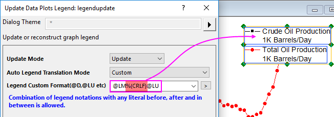
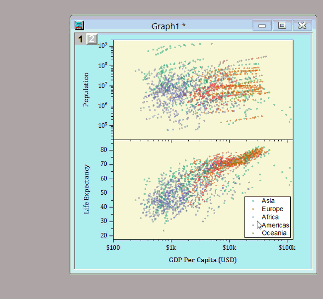

FAQ-153 Wie passe ich die Legende benutzerdefiniert an?
Customize-Legend
Letztes Update: 15.05.2019
Textteil der Legende benutzerdefiniert anpassen
Standardmäßig zeigt der Text in der Legende die Spaltenkommentare. Sie können entweder einen Buchstaben eingeben oder den Dialog Legende der Datenzeichnung aktualisieren verwenden, um andere Spalteninformationen, wie Langname, Einheiten, benutzerdefinierte Parameter, Arbeitsblattname etc. zu verwenden
- Klicken Sie mit der rechten Maustaste auf die Legende und wählen Sie Legende: Legende aktualisieren. Wählen Sie Grafik: Legende: Legende aktualisieren im Menü.
- Ändern Sie die Syntax in der Auswahlliste Automatischer Übersetzungsmodus der Legende. Zum Aktualisieren des Legendentexts lesen Sie bitte Wie ändere ich die Legende?.
- Sie können auch Benutzerdefiniert wählen und sich mehr Syntax anzeigen lassen. Sie können literalen Text und Syntax kombinieren.

Hinweis:
- Solche Bedienelemente existieren auch auf der Registerkarte Legende/Titel des Dialogs Seiteneigenschaften. Wählen Sie Format: Seite, um den Dialog Seiteneigenschaften zu öffnen.
- Damit die Textfarbe der Zeichnungsfarbe entspricht, klicken Sie mit der rechten Maustaste auf die Legende und wählen Sie Legende: Textfarbe folgt Zeichnung im Kontextmenü.
- Legendeneinstellungen können in einer Diagrammvorlage gespeichert und später wiederverwendet werden.
 | Mit %(CRLF) fügen Sie einen Zeilenumbruch in Ihren benutzerdefinierten Legendentext ein:
- 
- Setzen Sie im Dialog legendupdate den Automatischen Übersetzungsmodus der Legende auf Benutzerdefiniert und fügen Sie "%(CRLF)" in Ihre Formatzeichenkette ein.
- Das Gleiche können Sie im Dialog Details Zeichnung tun. Gehen Sie zur Registerkarte Legende/Titel, setzen Sie Übersetzungsmodus von %(1), %(2) auf Benutzerdefiniert und geben Sie Ihren benutzerdefinierten Legendentext ein, um "%(CRLF)" an der Stelle einzubinden, an der Sie den Text auf eine neue Zeile umbrechen möchten.
|
Symbolteil der Legende benutzerdefiniert anpassen
Symbolgröße anpassen
Standard ist, dass der Symbolteil in der Legende der Zeichnungsgröße entspricht. Wenn das Symbol in der Zeichnung zu klein ist oder die Dicke des Liniendiagramms zu schmal, ist es schwierig, die Legende zu lesen. Für Säulen-/Balken-/Flächendiagramme erstellt Origin immer einen rechteckigen Block mit einer festen Größe in der Legende. Vielleicht möchten Sie die Blockbreite oder -höhe anpassen, damit es besser aussieht. Um all dies zu tun,
- klicken Sie in Origin 2018 und höheren Versionen doppelt auf die Legende oder klicken Sie mit der rechten Maustaste auf die Legende und wählen Sie Eigenschaften im Kontextmenü. Gehen Sie zur Registerkarte Symbol, um die Skalierung anzupassen.
- 
- Hinweis: Sie können auf der Registerkarte Symbol die Linien-Symbol-Legende als Hantelform anzeigen (Symbol-Linie-Symbol) und den Abstand zwischen Symbol und Linie anpassen.
Die Blockbreite des Musters und die Blockhöhe des Musters können verwendet werden, um die Breite und Höhe eines Legendensymbols im Blockstil (wie Säulen/Balken) anzupassen. Sie können allerdings keine Zahlen, die größer als 100 sind, umsetzen.
- In Origin 2017 und älter können Sie die Symbolgröße mit Substitutionsnotation der Legende anpassen.
Neue Symboleinträge erstellen
- Klicken Sie in Origin 2018 und höheren Versionen doppelt auf die Legende oder klicken Sie mit der rechten Maustaste auf die Legende und wählen Sie Eigenschaften im Kontextmenü, um den Dialog Textobjekt - Legende zu öffnen. Klicken Sie auf der Registerkarte Text auf die Schaltfläche Legendensymbol hinzufügen, um Ihr Symbol in der Legende hinzuzufügen. Die Legendensymbole für Linie, Pfeil, Symbol sowie Linie+Symbol werden unterstützt.

- Für Origin 2017 und ältere Versionen lesen Sie bitte den Abschnitt Unabhängiges Symbol in Legende, um das Symbol manuell zu erstellen.
Layout der Legende benutzerdefiniert anpassen
Einige neue Verbesserungen zum Organisieren der Legende werden mit der Zeit ergänzt. Auf die Mindestversion für die Funktion wird am Ende der Zeile hingewiesen.
- Um Legendeneinträge in die umgekehrte Reihenfolge zu bringen, klicken Sie mit der rechten Maustaste auf die Legende und wählen Sie Legende: Umgekehrte Reihenfolge. (Origin 2015)
- Um die Legendeneinträge horizontal anzuordnen, klicken Sie mit der rechten Maustaste auf die Legende und wählen Sie Legende: Horizontal anordnen. (Origin 2016)
- Um die Legendeneinträge in mehreren Spalten anzuordnen, drücken Sie die Strg-Taste und ziehen Sie am Rahmen der Legende. (Origin 2015)
- Um zum weißen Legendenfeld mehr weißen Rand hinzuzufügen, klicken Sie auf die Legendenrahmenlinie, bis der doppelte Rahmen angezeigt wird. Ziehen Sie am Rahmen.
- Um mehr Abstand zwischen den Einträgen hinzuzufügen, klicken Sie mit der rechten Maustaste auf die Legende und wählen Sie Eigenschaften. Passen Sie den Zeilenabstand an. (Origin 2016)
Schlüsselwörter:Datensatz, Symbol, speziell, ini, Länge der Legende, Breite der Legende, Legendensymbolgröße, Legendeneinträge hinzufügen
Bitte lesen die Einzelheiten im Origin-Handbuch nach.